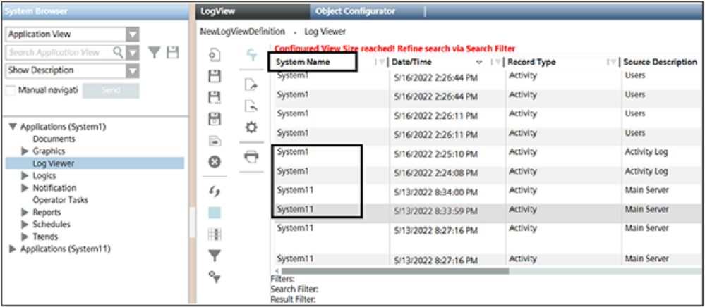

Link HDBs on different SQL Servers
In a distributed system, HDBs may be located on different SQL Servers. If you want a project to access data (for example, for reports) from multiple HDBs on different SQL Servers, you must link the SQL Servers.
- You have set up the distributed system.
- Start SMC.
- In the SMC tree, select Database Infrastructure > [SQL Server Name].
- Open the Distribution expander
- A list of known SQL Servers is displayed. If the desired server is not displayed, you must link it to the SMC.
- Select the server you want to link with the server selected in the SMC tree and select the Linked check box.
NOTE: The Linked check box of the HDB in the Databases expander must also be selected. - In the SMC tree, select the SQL server you linked in step 4.
- Open the Distribution expander.
- Select the server instance with the other HDB and select the Linked check box.
NOTE: Both servers must be linked to each other. - Click Save.
